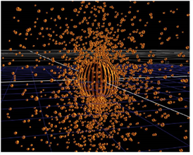

为了创建粒子，您需要的最小设置是粒子发射器节点。要连接粒子节点:
| 1。 | 单击 粒子 工具栏中的菜单，然后选择 ParticleEmitter 节点。 |
| 2. | 将其连接到查看器节点。 |
| 3. | 将三维几何对象或 PositionToPoints 点云连接到 发射 粒子发射器的输入。发射粒子的 3D 对象是可选的: 如果不使用，粒子将从原点沿 y 轴发射。 |
| 4. | 要指定粒子的外观，请在 粒子 粒子发射器的输入。然后将该图像或几何图形相乘并用作每个粒子的表示。如果要使用多个表示，请将更多图像或几何图形连接到其他编号的 粒子 输入。粒子发射器为每个粒子随机选择其中一个。 |
| 5. | 如果你有另一个粒子系统，你想连接到你的新粒子发射器，你可以将它连接到 合并 输入。还可以将粒子系统与 ParticleMerge 节点合并 (请参见 合并粒子流 )。 |
| 6. | 现在，您已经准备好开始修改粒子，使其看起来像您想要的那样。要做到这一点，你可以选择任何不同粒子节点中的工具栏 粒子 菜单，并将它们连接到粒子发射器节点的输出或其他粒子节点。它们中的每一个都对粒子有自己的影响，并有一组可以进行调整的控件。 |
|
 |
| 从球体几何发射的粒子。 |
|
|